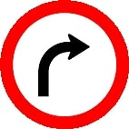
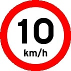
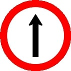
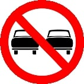
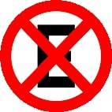

Minhas listas favoritas
Minhas listas favoritas
Lista ordenada com 5 regras de bom comportamento
- Respeite as outras pessoas: uma das regras mais importantes de bom comportamento é tratar as outras pessoas com respeito, gentileza e consideração. Isso inclui ser cortês e educado, ouvir atentamente e não interromper, evitar falar mal dos outros e não usar linguagem ofensiva.
- Seja pontual: outra regra de bom comportamento é ser pontual e cumprir com seus compromissos. Isso significa chegar na hora certa para encontros e compromissos, e avisar com antecedência caso você não possa comparecer ou precisar mudar os planos.
- Demonstre gratidão: é sempre importante demonstrar gratidão pelas coisas boas que as outras pessoas fazem por você. Agradeça quando receber um presente, um favor, ou mesmo um elogio. Isso ajuda a fortalecer os relacionamentos e a construir um ambiente mais positivo.
- Seja honesto e sincero: a honestidade e a sinceridade são fundamentais em qualquer relacionamento. Quando você é honesto e sincero, as outras pessoas confiam em você e se sentem mais à vontade para se abrir e compartilhar suas próprias ideias e sentimentos. Isso ajuda a fortalecer os relacionamentos e a construir uma comunicação saudável.
- Ajude os outros: finalmente, uma das regras mais importantes de bom comportamento é ajudar os outros sempre que possível. Isso pode incluir coisas simples, como segurar a porta para alguém, oferecer ajuda quando alguém estiver carregando algo pesado, ou mesmo ser voluntário em uma organização de caridade. Quando você ajuda os outros, você se sente bem consigo mesmo e contribui para um mundo melhor.
Lista não ordenada com meus 5 emojis favoritos
Lista não ordenada cada uma com ícones ou imagens pequenas que representem placas de trânsito e seu significado
-

Vire à direita
-

Velocidade máxima permitida
-

Siga em frente
-

Proibido ultrapassar
-

Proibido parar e estacionar
Lista aninhada sobre o livro O grande conflito